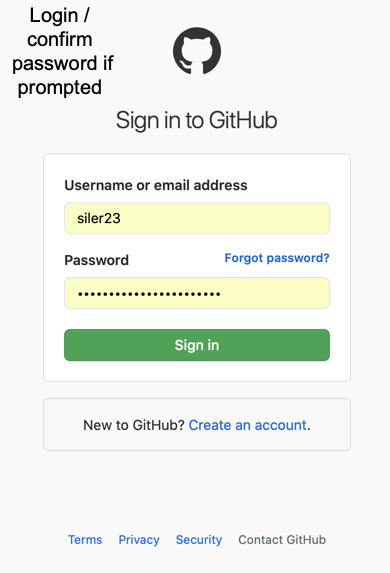
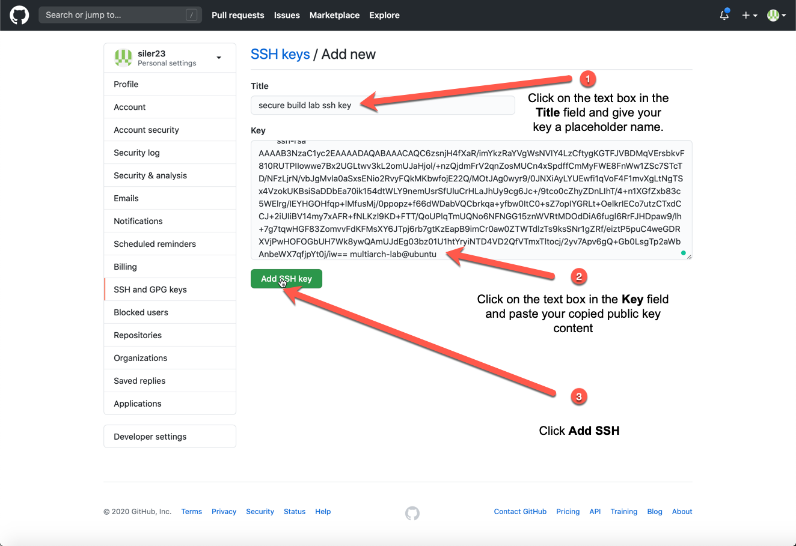
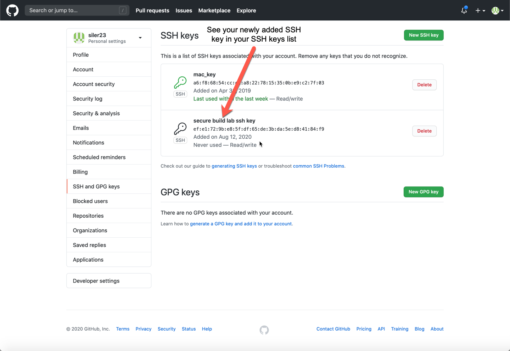

Configuring your Environment¶
Explore the Hyper Protect Virtual Servers command line interface (CLI)¶
Info
In this lab, we will use the Hyper Protect Virtual Servers CLI (hpvs command) to interact with our Hyper Protect Virtual Servers Hosting Appliance in order to perform the various actions necessary for the Secure Build. Below is a quick introduction to the commands available through this CLI.
-
See the different commands you could enter with:
hpvs --helpExample Output
IBM® Hyper Protect Virtual Servers, the evolution of the IBM® Secure Service Container for IBM® Cloud Private offering, protects Linux workloads on IBM Z and LinuxONE throughout their lifecycle build management and deployment. This solution delivers the security needed to protect mission critical applications in hybrid multi-cloud deployments. Usage: hpvs [command] Available Commands: completion generate the autocompletion script for the specified shell crypto Crypto command deploy Deploy command help Help about any command host Host command image Image Command network Network command quotagroup Quotagroup command regfile Generate encrypted repository registration file. If you have already image build on s390x arch registry Registry command repository Repository command sb SecureBuild command snapshot Snapshot command undeploy Undeploy command version Print hpvs version vs Virtual Server command Flags: --debug If --debug is passed, it will enable debug logs -h, --help Help for hpvs --log-output-dir string Set log output directory Use "hpvs [command] --help" for more information about a command. -
See more information for the
Available Commandslisted above with:hpvs completion --helpExample Output
Generate the autocompletion script for hpvs for the specified shell. See each sub-command's help for details on how to use the generated script. Usage: hpvs completion [command] Available Commands: bash generate the autocompletion script for bash fish generate the autocompletion script for fish powershell generate the autocompletion script for powershell zsh generate the autocompletion script for zsh Flags: -h, --help help for completion Global Flags: --debug If --debug is passed, it will enable debug logs --log-output-dir string Set log output directory Use "hpvs completion [command] --help" for more information about a command.hpvs crypto --helpExample Output
List crypto Usage: hpvs crypto [command] Available Commands: list List crypto Flags: -h, --help Help for crypto --host string Host LPAR name --json if --json flag is passed , the output will be in json format Global Flags: --debug If --debug is passed, it will enable debug logs --log-output-dir string Set log output directory Use "hpvs crypto [command] --help" for more information about a command.hpvs deploy --helpExample Output
Deploy virtual servers Usage: hpvs deploy [flags] Flags: --config string YAML configuration file for the virtual server deployment --exclude strings Virtual servers e.g vs1,vs2; to be excluded from deploying, other vs will be included for deployment, by default all vs will be deployed -h, --help help for deploy --include strings Virtual servers e.g vs1,vs2; to be included for deploying, other vs will be excluded from deployment by default all vs will be deployed --templatefile string YAML resource template file for the virtual server deployment -u, --update If -u is passed virtual server deployment setup gets updated Global Flags: --debug If --debug is passed, it will enable debug logs --log-output-dir string Set log output directoryhpvs help --helpExample Output
Help provides help for any command in the application. Simply type hpvs help [path to command] for full details. Usage: hpvs help [command] [flags] Flags: -h, --help help for help Global Flags: --debug If --debug is passed, it will enable debug logs --log-output-dir string Set log output directoryhpvs host --helpExample Output
add, delete, update, list, unset, show, set Host Usage: hpvs host [command] Available Commands: add Add host delete Delete host list List host set Set host show Show host unset Unset host update Update host Flags: -h, --help Help for host Global Flags: --debug If --debug is passed, it will enable debug logs --log-output-dir string Set log output directory Use "hpvs host [command] --help" for more information about a command.hpvs image --helpExample Output
list, delete, show, load, pull Image Usage: hpvs image [command] Available Commands: delete Delete image list List image load Upload image pull Pull image show Show image Flags: -h, --help Help for image --host string Host LPAR name --json if --json flag is passed , the output will be in json format Global Flags: --debug If --debug is passed, it will enable debug logs --log-output-dir string Set log output directory Use "hpvs image [command] --help" for more information about a command.hpvs network --helpExample Output
list, create, update, delete, show Network Usage: hpvs network [command] Available Commands: create Create network delete Delete network list List network show Show network update Update network Flags: -h, --help Help for network --host string Host LPAR name --json if --json flag is passed , the output will be in json format Global Flags: --debug If --debug is passed, it will enable debug logs --log-output-dir string Set log output directory Use "hpvs network [command] --help" for more information about a command.hpvs quotagroup --helpExample Output
create, delete, list, show, update Quotagroup Usage: hpvs quotagroup [command] Available Commands: create Create quotagroup delete Delete quotagroup list List quotagroup show Show quotagroup update Update quotagroup Flags: -h, --help Help for quotagroup --host string Host LPAR name --json if --json flag is passed , the output will be in json format Global Flags: --debug If --debug is passed, it will enable debug logs --log-output-dir string Set log output directory Use "hpvs quotagroup [command] --help" for more information about a command.hpvs regfile --helpExample Output
Generate encrypted repository registration file. If you have already image build on s390x arch Usage: hpvs regfile [command] Available Commands: create Create encrypted repository registration file Flags: -h, --help Help for regfile Global Flags: --debug If --debug is passed, it will enable debug logs --log-output-dir string Set log output directory Use "hpvs regfile [command] --help" for more information about a command.hpvs registry --helpExample Output
add, delete, update, list, show Registry Usage: hpvs registry [command] Available Commands: add Add registry delete Delete registry list List registry show Show registry update Update registry Flags: -h, --help Help for registry --json if --json flag is passed , the output will be in json format Global Flags: --debug If --debug is passed, it will enable debug logs --log-output-dir string Set log output directory Use "hpvs registry [command] --help" for more information about a command.hpvs repository --helpExample Output
list, register, delete, show, update Repository Usage: hpvs repository [command] Available Commands: delete Delete repository list List repository register Register repository show Show repository update Update repository Flags: -h, --help Help for repository --host string Host LPAR name --json if --json flag is passed , the output will be in json format Global Flags: --debug If --debug is passed, it will enable debug logs --log-output-dir string Set log output directory Use "hpvs repository [command] --help" for more information about a command.hpvs sb --helpExample Output
SecureBuild command Usage: hpvs sb [command] Available Commands: build Securely build your image clean Secure build clean. It will clean vs data eg - logs init Initialize secure build configuration log Get logs manifest Get manifest file pubkey Get manifest public key regfile Get encrypted repository registration file status Get secure build status update Update secure build environment Flags: -h, --help Help for sb Global Flags: --debug If --debug is passed, it will enable debug logs --log-output-dir string Set log output directory Use "hpvs sb [command] --help" for more information about a command.hpvs snapshot --helpExample Output
list, create, delete, restore Snapshot Usage: hpvs snapshot [command] Available Commands: create Create snapshot delete Delete snapshot list List snapshots restore Restore snapshot Flags: -h, --help Help for snapshot --host string Host LPAR name --json if --json flag is passed , the output will be in json format Global Flags: --debug If --debug is passed, it will enable debug logs --log-output-dir string Set log output directory Use "hpvs snapshot [command] --help" for more information about a command.hpvs undeploy --helpExample Output
Undeploy virtual servers Usage: hpvs undeploy [flags] Flags: --config string YAML configuration file used for the virtual server deployment --exclude strings Virtual servers e.g vs1,vs2; to be excluded from undeploying, other vs will be included for undeployment, by default all vs will be undeployed -h, --help help for undeploy --include strings Virtual servers e.g vs1,vs2; to be included for undeploying, other vs will be excluded from undeployment by default all vs will be undeployed Global Flags: --debug If --debug is passed, it will enable debug logs --log-output-dir string Set log output directoryhpvs version --helpExample Output
Print hpvs version Usage: hpvs version [flags] Flags: -h, --help Help for version Global Flags: --debug If --debug is passed, it will enable debug logs --log-output-dir string Set log output directoryhpvs vs --helpExample Output
create, delete, list, log, restart, show, start, stop VS Usage: hpvs vs [command] Available Commands: create Create virtual server delete Delete virtual server list List virtual servers log Get virtual server log restart Restart virtual server show Show virtual server start Start virtual server stop Stop virtual server update Update virtual server Flags: -h, --help Help for vs --host string Host LPAR name --json if --json flag is passed , the output will be in json format Global Flags: --debug If --debug is passed, it will enable debug logs --log-output-dir string Set log output directory Use "hpvs vs [command] --help" for more information about a command. -
You can even dive into the
Available Commandsof the above commands with another--help
hpvs sb build --helpExample Output
Securely build your image Usage: hpvs sb build [flags] Flags: --config string Config file path -h, --help Help for build --timeout int Build timeout in minutes (default 10) Global Flags: --debug If --debug is passed, it will enable debug logs --log-output-dir string Set log output directory -
For further exploration of the Hyper Protect Virtual Servers CLI see the Knowledge Center
Add Docker registry to use for secure build¶
Info
In this section you will add the details to connect to your Docker Hub Registry so your secure build container can push your securely built images there. Don't worry, your Docker token is safely encrypted on your Skytap Linux VM using the HPVS Registry CLI Encryption Key referenced in the key table.
-
See your current Docker registries with:
hpvs registry listExample Output
+---------------+ | REGISTRY NAME | +---------------+ +---------------+ -
Set your
DOCKER_USERNAMEto the username for your account on Docker Hubexport DOCKER_USERNAME="my_username"export DOCKER_USERNAME="gmoney23"Note
This will be the username you used when you created your Docker Hub account in the Prerequisites
-
Save your
DOCKER_USERNAMEtobashrcfor later use.echo "export DOCKER_USERNAME='${DOCKER_USERNAME}'" >> "${HOME}/.bashrc" -
Set your
DOCKER_PASSWORDto the token you created for this lab on Docker Hub.export DOCKER_PASSWORD="my_docker_token"export DOCKER_PASSWORD="123456789"Note
This will be the Docker Hub token you created for the lab in the Prerequisites
-
Check your Docker Hub login credentials with a
docker loginand do adocker logoutto remove unencrypted Docker credentials locally.echo "${DOCKER_PASSWORD}" | docker login -u ${DOCKER_USERNAME} --password-stdin && docker logoutSuccessful login
WARNING! Your password will be stored unencrypted in /home/hyper-protect-lab/.docker/config.json. Configure a credential helper to remove this warning. See https://docs.docker.com/engine/reference/commandline/login/#credentials-store Login Succeeded Removing login credentials for https://index.docker.io/v1/Failed Login
 Please redo this section
Please redo this sectionError response from daemon: Get https://registry-1.docker.io/v2/: unauthorized: incorrect username or password -
Set your
REGISTRY_NAMEto a Docker registry placeholder name of your choosing.export REGISTRY_NAME="my_registry"export REGISTRY_NAME="g_docker_hub" -
Save your
REGISTRY_NAMEtobashrcfor future shells (in case you open new terminals)echo "export REGISTRY_NAME='${REGISTRY_NAME}'" >> "${HOME}/.bashrc" -
Add your Docker registry with:
echo "${DOCKER_PASSWORD}" | hpvs registry add \ --name "${REGISTRY_NAME}" --dct https://notary.docker.io \ --url docker.io --user "${DOCKER_USERNAME}"Example Output
Enter Password:Note
You can ignore the
Enter Password:prompt because the command does that for you with theecho "${DOCKER_PASSWORD}" |before thehpvs registry addcommand. -
List your registered Docker registries again to confirm your registry has been added.
hpvs registry listExample Output
+---------------+ | REGISTRY NAME | +---------------+ | g_docker_hub | +---------------+ -
Check the details of your added registry with
hpvs registry show --name "${REGISTRY_NAME}"Example Output
+------+--------------------------+ | name | g_docker_hub | | user | gmoney23 | | dct | https://notary.docker.io | | url | docker.io | +------+--------------------------+
Create directory for secure build lab and change directory¶
-
Set your secure build directory
export SB_DIR="$HOME/securebuild-lab" -
Save
SB_DIRto$HOME/.bashrcfor future shells (in case you open new terminals)echo "export SB_DIR='${SB_DIR}'" >> "${HOME}/.bashrc" -
Create
SB_DIRand change into itmkdir -p "${SB_DIR}" && cd "${SB_DIR}"
Create SSH Key and Grant GitHub access¶
Info
This section goes through adding the GitHub SSH Key referenced in the key table to your GitHub account to enable cloning GitHub repositories via SSH for secure builds.
-
Create GitHub keys directory
mkdir -p "${SB_DIR}/github_keys" -
Set
GITHUB_SSH_KEYvariableexport GITHUB_SSH_KEY="${SB_DIR}/github_keys/github_rsa" -
Save
GITHUB_SSH_KEYvariable inbashrcfor later useecho "export GITHUB_SSH_KEY='${GITHUB_SSH_KEY}'" >> "${HOME}/.bashrc" -
Create public and private key for GitHub access
ssh-keygen -t rsa -b 4096 -f "${GITHUB_SSH_KEY}" -N ''Example Output
Generating public/private rsa key pair. Your identification has been saved in /home/multiarch-lab/securebuild-lab/github_keys/github_rsa. Your public key has been saved in /home/multiarch-lab/securebuild-lab/github_keys/github_rsa.pub. The key fingerprint is: SHA256:sbEfCzwyOz/LaZ4jSeKT+Aw7IWUr7YT6m8Hxv9Dq90k multiarch-lab@ubuntu The key's randomart image is: +---[RSA 4096]----+ | | | | | o | | o . = | | =.. o S . | |+.=o...+ + o | |.=++o++.E o | |. +*+++=++ | | .===oo*X+ | +----[SHA256]-----+ -
Cat GitHub public key to terminal
cat "${GITHUB_SSH_KEY}.pub"Example Output
ssh-rsa AAAAB3NzaC1yc2EAAAADAQABAAACAQC6zsnjH4fXaR/imYkzRaYVgWsNVIY4LzCftygKGTFJVBDMqVErsbkvF810RUTPIIowwe7Bx2UGLtwv3kL2omUJaHjol/+nzQjdmFrV2qnZosMUCn4xSpdffCmMyFWE8FnWw1ZSc7STcTD/NFzLjrN/vbJgMvla0aSxsENio2RvyFQkMKbwfojE22Q/MOtJAg0wyr9/0JNXiAyLYUEwfi1qVoF4F1mvXgLtNgTSx4VzokUKBsiSaDDbEa70ik154dtWLY9nemUsrSfUluCrHLaJhUy9cg6Jc+/9tco0cZhyZDnLIhT/4+n1XGfZxb83c5WElrg/IEYHGOHfqp+lMfusMj/0ppopz+f66dWDabVQCbrkqa+yfbw0ItC0+sZ7opIYGRLt+OelkrIECo7utzCTxdCCJ+2iUIiBV14my7xAFR+fNLKzl9KD+FTT/QoUPlqTmUQNo6NFNGG15znWVRtMDOdDiA6fugl6RrFJHDpaw9/lh+7g7tqwHGF83ZomvvFdKFMsXY6JTpj6rb7gtKzEapB9imCr0aw0ZTWTdlzTs9ksSNr1gZRf/eiztP5puC4weGDRXVjPwHOFOGbUH7Wk8ywQAmUJdEg03bz01U1htYryiNTD4VD2QfVTmxTltocj/2yv7Apv6gQ+Gb0LsgTp2aWbAnbeWX7qfjpYt0j/iw== multiarch-lab@ubuntu -
Copy your output (not the
Example Outputabove) to the clipboard withctrl+c.Warning
The above copy command (
ctrl+c) is saving the.pubpublic key NOT theprivatekey. You keep the private key and GitHub uses the public key to verify that it is communicating with the owner of the private key (i.e. you). -
Add this key to your public GitHub at https://github.com/settings/ssh/new
-
Login or confirm your password if prompted

-
Add SSH Key

-
See your new SSH key has been added with your chosen title.

Note
You created this public GitHub account in the Prerequisites (or already had one).
-
-
Scan for GitHub's public key (Done to trust GitHub connection the first time)
ssh-keyscan -H github.com >> "${HOME}/.ssh/known_hosts"Example Output
# github.com:22 SSH-2.0-babeld-4f04c79d # github.com:22 SSH-2.0-babeld-4f04c79d # github.com:22 SSH-2.0-babeld-4f04c79d -
Check that your GitHub key now has access to your account with:
ssh -T git@github.com -i "${GITHUB_SSH_KEY}"Your key was added successfully
Warning: Permanently added the RSA host key for IP address '140.82.114.3' to the list of known hosts. Hi siler23! You've successfully authenticated, but GitHub does not provide shell access.Your key was NOT added
Please redo this sectionWarning: Permanently added the RSA host key for IP address '140.82.113.3' to the list of known hosts. git@github.com: Permission denied (publickey). -
Feel at ease knowing you will delete this key from your Github account in the cleanup phase of this lab so access will be revoked soon enough